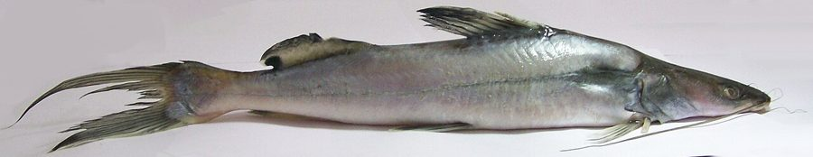

सिंघारीGiant River Catfish
Sperata seenghala · Bagridae · FSH-0035

- Scientific name वैज्ञानिक नाम
- Sperata seenghala (Sykes, 1839)
- Family कुल
- Bagridae
- Hindi हिंदी
- सिंघारी
- Local names स्थानीय नाम
- singhari, singhara, seenghala, giant river catfish
- Status here यहाँ की स्थिति
- native
- Movement आवागमन
- Resident, here all year
- Known from कहाँ दर्ज
- Others have published records from the wider Awadh–Purvanchal plain, none yet from Basti–Ayodhya अवध–पूर्वांचल से दूसरों के प्रकाशित अभिलेख, बस्ती–अयोध्या से अभी नहीं
- IUCN IUCN
- LC
- Review समीक्षा
- audited and independently read
When to look कब देखें
Present all year. साल भर मौजूद।
Uses and possibilities उपयोग और संभावनाएँ
Drawn from the documented uses in the profile below, where each is labelled traditional, current or a research lead. All uses →
Tell it apart from इनसे अलग पहचानें
सिंघारी / Giant River Catfish
Sperata seenghala (Sykes, 1839) — Bagridae
सिंघारी — भारत की सबसे बड़ी कैटफिश, जो तालों और गहरी नदियों में रहती है। इसका वजन 50 किलो तक हो सकता है। बहुत दुर्लभ हो गई है। कुछ स्थानों पर लगभग गायब है।
Quick Identification त्वरित पहचान
| Feature | Description |
|---|---|
| Size | 60–150 cm (exceptionally to 180 cm); very large |
| Body | Robust, moderately compressed; scaleless, slimy |
| Head | Massive, flattened; 4 barbels |
| Colour | Dark grey-brown above; silvery-white below |
| Fins | Dorsal spine strong; pectoral spines serrated |
| Tail | Moderately forked, dark |
Field tip: The largest catfish in eastern UP. Solitary, living in the deepest pools and main river channels. Nocturnal predator of large fish. Very rare to encounter as it stays in deep water. Commercial fishing and river degradation have decimated populations.
हिंदी: बहुत बड़ी, गहरी नदी में रहने वाली मछली। रात में शिकार करती है। अब दुर्लभ है।
Morphology आकारिकी
Biometrics (adult specimens):
| Measurement | Range |
|---|---|
| Standard length | 600–1500 mm (up to 1800 mm recorded) |
| Weight | 5–50 kg (rarely more) |
| Barbel length | Variable with age |
| Dorsal fin spines | 1 |
| Pectoral spines | 1 (serrated, venomous) |
| Anal fin rays | 15–17 |
Body: Robust, moderately laterally compressed. Scaleless skin covered with mucus. Larger than the closely related Long-whiskered Catfish (Sperata aor).
Head: Massive, broad, and flattened dorsoventrally. Eyes moderate-sized. Mouth terminal to subterminal. Four barbels: maxillary pair (long, reaching or exceeding pectoral spine); nasal pair (short).
Coloration: Dark grey-brown or nearly black above; silvery-white on belly; fins dark or blackish.
Fins: Dorsal fin with 1 spine and 6–7 rays. Pectoral fin with 1 large, serrated, venomous spine and 9–10 rays. Ventral fin with 8 rays. Anal fin long with 15–17 rays. Adipose fin present.
Tail: Moderately forked; dark coloration.
Size dimorphism: Females reach larger sizes than males (exceptionally to 1.8 m and 50+ kg).
हिंदी: विशाल शरीर, मजबूत काँटे। चार दाढ़ियाँ। लाल आँखें (कभी-कभी)।
Behaviour & Ecology व्यवहार और पारिस्थितिकता
Solitary, nocturnal predator. The Giant River Catfish is predominantly nocturnal and solitary, inhabiting the deepest pools and main river channels. It is a powerful predator of large fish, consuming fish up to half its own body length. Uses barbels to locate prey in dark water.
Sedentary. Unlike the nomadic Long-whiskered Catfish, S. seenghala tends to be more sedentary, maintaining deep-pool territories for extended periods.
Habitat preference: Requires large, deep rivers with cool, flowing water and rocky or sandy substrates. Very sensitive to pollution and river degradation. Avoids turbid water and areas with high silt loads.
Feeding ecology: Piscivorous (fish-eater). Prefers large fish species; occasionally consumes crustaceans and aquatic mammals (small).
Lifespan and growth: Extremely long-lived (30+ years possible); slow-growing. Reaches sexual maturity at 4–6 years.
Population status. Severely depleted across its range due to overfishing, river degradation, and habitat loss. Now rare in most rivers; its present status here is unknown.
Predators: Humans (extensively fished). Large eagles (for small individuals).
हिंदी: अकेली, रात में शिकार करती है। गहरी नदी में रहती है। बहुत पुरानी उम्र जीती है।
Life Cycle / Phenology जीवन चक्र
| Event | Timing |
|---|---|
| Sexual maturity | 4–6 years |
| Breeding | Monsoon to early post-monsoon (August–October) |
| Fecundity | Thousands to tens of thousands of eggs per female |
| Egg development | 24–48 hours (temperature dependent) |
| Larval growth | Rapid in monsoon conditions |
| Recruitment | Dependent on floodplain connectivity |
| Longevity | 30+ years |
हिंदी: देर से बालिग़ होती है। बरसात में प्रजनन करती है। बहुत लंबे समय तक जीवित रहती है।
Host Plants or Prey आहार
| Prey Type | Size | Notes |
|---|---|---|
| Large fish | Up to 50% body length | Major catfish, carp, snakeheads |
| Medium fish | All sizes | Puntius, Labeo species |
| Aquatic vertebrates | Small | Occasionally frogs, crustaceans |
Predators / Natural Enemies शत्रु
- Avian predators: Large eagles (for juveniles)
- Humans: Heavy fishing pressure; primary threat to population
Agricultural / Human Relevance कृषि प्रासंगिकता
Historical importance. The Giant River Catfish was historically one of the most important food fish in the Gangetic region. Large individuals commanded high prices and were symbols of fishing prowess.
Current status. Severely overfished and now rare in most areas. Populations have collapsed due to:
- Unsustainable fishing. Large, slow-growing fish are vulnerable to overfishing.
- River degradation. Dams, barrages, and water extraction have fragmented habitat and prevented migration.
- Habitat loss. Loss of flooded areas, siltation, and pollution have destroyed spawning and nursery habitat.
- Bycatch. Caught in gill nets and traps set for other species.
Conservation concern. Status varies locally: extinct in some rivers, rare in others. The species requires priority conservation action.
Today. Very rarely caught; when encountered, typically commands premium prices. Increasingly protected by conservation regulations in some states.
Research direction (a lead, not a result). The breeding habitat requirements, migration patterns, and role of floodplain connectivity in recruitment are not quantified locally. Recovery strategies have not been tested.
हिंदी: पहले बहुत खाई जाती थी। अब लगभग गायब हो गई है। इसे बचाना कठिन है क्योंकि यह धीरे-धीरे बड़ी होती है।
Expected Locally स्थानीय रूप से अपेक्षित
Not a field record. Written from published accounts for eastern Uttar Pradesh. No confirmed local sighting yet — if you have seen it, that is what the atlas needs.
अभी तक स्थानीय पुष्टि नहीं। यह विवरण प्रकाशित स्रोतों से है, किसी अवलोकन से नहीं।
This species is NOT a field record. The distribution below is based on published sources describing where Giant River Catfish should be looked for in the Basti–Ayodhya region.
To be expected in the deepest pools and main channels of the Ghaghra and Rapti rivers. Very rare to encounter; most likely discovered through fishery interviews, market surveys, or incidental catches. A confirmed specimen or photograph is valuable scientific data.
Given the species' decline, actual presence in Basti–Ayodhya is uncertain; local extinction is possible in many areas.
Distribution वितरण
Global range: South Asia, primarily the Ganges and Brahmaputra drainages. Formerly distributed throughout major rivers from the Himalayas to Bangladesh.
In India: Historically throughout the Ganga, Brahmaputra, and associated river systems; now fragmented and rare.
In Uttar Pradesh: Formerly common; now rare, and its present status here is unknown.
In Basti / eastern UP: Historically present in the Ghaghra and Rapti rivers; current status unknown; presence possible only in deepest pools.
Research Questions शोध प्रश्न
- How many Giant River Catfish remain in the Ghaghra–Rapti system, and what is their current breeding status?
- What are the key habitat requirements for spawning and recruitment?
- क्या कृत्रिम प्रजनन से इस मछली को बचाया जा सकता है? (Can aquaculture-based breeding help?)
- What dam operation strategies would restore fish passage and allow migration?
- Do surviving populations show genetic diversity, or is it already lost? (Genetic analysis.)
- भारत की सबसे बड़ी कैटफिश को बचाने के लिए कौन-से कदम जरूरी हैं? (What conservation actions are needed?)
Similar Species मिलती-जुलती प्रजातियाँ
| Species | How to tell apart | हिंदी | |
|---|---|---|---|
| [[long_whiskered_catfish | Long-whiskered Catfish]] (Sperata aor) | Smaller (35–60 cm); similar barbel pattern but more slender body | आर, छोटी |
| [[stinging_catfish | Stinging Catfish]] (Heteropneustes fossilis) | Much smaller (15–30 cm); single pair of barbels; different fin pattern | बड़ी, एक दाढ़ी (गलत नाम) |
Field rule: The largest catfish in the region, with 4 barbels and reaching 60–150 cm or more. No other catfish grows to this size in eastern UP.
Taxonomy & Classification वर्गीकरण
Original description. Described by Sykes in 1839 in Proceedings of the Zoological Society of London as Pimelodus seenghala. Later transferred to Sperata by contemporary workers.
Subspecies. Monotypic — S. seenghala is the only recognised subspecies.
Family and order placement. Order Siluriformes; family Bagridae. The genus Sperata contains large, benthic catfish.
Phylogenetic notes. S. seenghala and S. aor are sister species; closely related to other Asian bagrid catfish.
IUCN status rationale. Least Concern globally (though this assessment may underestimate regional decline). Widespread and abundant in parts of its range; however, local populations are severely threatened or extinct. In India, the species is declining rapidly and may warrant regional Red List assessment.
Photo Gallery फोटो गैलरी
No photos yet — add field photos to media/species/giant_river_catfish/ and run node scripts/sync_photos.js.
Wanted photos:
- Large specimen (showing size)
- Dorsal view showing barbel arrangement
- Head detail
- Market specimen (बाज़ार में)
- Historical records or museum specimens
References संदर्भ
- Sykes, W.H. (1839). Observations on the fishes of the Deccan. Proceedings of the Zoological Society of London, 7: 159–163.
- Talwar, P.K. & Jhingran, A.G. (1991). Inland Fishes of India and Adjacent Countries, vol. 1. Balkema. Pp. 283–285.
- Day, F. (1878). The Fishes of India, vol. 1. Williams and Norgate, London.
- Hamilton, F. (1822). An Account of the Fishes Found in the River Ganges and Its Branches. Edinburgh.
- Lakra, W.S., Sarkar, U.K. & Modh, S.K. (2010). Conservation of freshwater fish biodiversity: our responsibility. Journal of Aquaculture, 8: 1–10.
- GBIF Occurrence Data — Sperata seenghala, India.
Source file: species/fauna/fish/giant_river_catfish.md